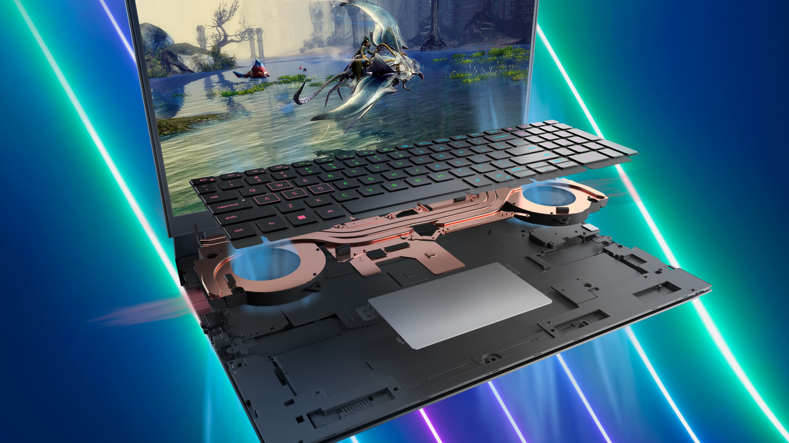

O Dell G15 5520 é uma atualização da popular linha de notebooks gamers da Dell focada em usuários que querem alta performance, mas um balanço mais equilibrado entre custo e benefício, comparado a modelos topo de linha como o Alienware. Entre os destaques da nova geração do Dell G15 estão um novo sistema de resfriamento mais eficiente, um teclado com até 4 zonas de customização na iluminação e uma nova opção de tela de 165Hz, além dos 120Hz já presentes na geração anterior.
Tecnologia Game Shift
Impulsione a energia simplesmente pressionando um botão. A função Game Shift é ativada pressionando FN + tecla Game Shift (F9) e aciona um modo de desempenho dinâmico no Alienware Command Center maximizando a velocidade dos ventiladores para manter o sistema refrigerado enquanto os processadores pegam no pesado. Recursos adicionais, como dois alto-falantes com áudio 3D nahimic para gamers e um teclado retroiluminado opcional RGB de 4 zonas com WASD, foram projetados para impulsionar todas as experiências gamers.

Design elegante
Um design altamente móvel e inspirado em jogos apresenta um novo acabamento robusto que é fácil de cuidar. Disponível em cinza-sombra escuro.